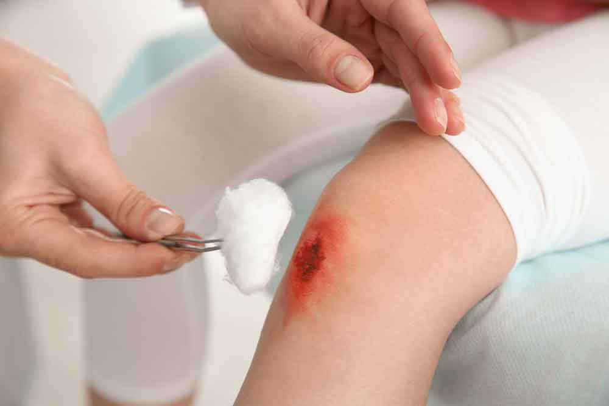

-
WOUND TREATMENT
- PANCHAKARMA
- VANITHA CLINIC
-
LIFE STYLE CLINIC
-
BEAUTY CLINIC
-
ALLERGY CLINIC

-
SKIN CARE CLINIC
-
SWARNA PRASHANA
-
YOGA & STRESS CLINIC
-
PAIN CLINIC
DIABETIC WOUND TREATMENT


Diabetic wounds can be very well treated using our traditional Ayurvedic medicine. Diabetic wound that occurs in patients with diabetes and is commonly located on the bottom of the foot. In people with diabetes, wounds can take longer to heal. This slow healing can increase a person’s risk of developing infections and other complications. We will be able to heal within weeks.


BEDSORE
Excellent results are seen for patients suffering from bedsores. Bedsores are ulcers that happen on areas of the skin that are under pressure from lying in bed or sitting in a wheelchair for a prolonged time. Bedsores most often develop on skin that covers bony areas of the body such as the heels, ankles, hips and tailbone.
How is it caused?
Different people get bed pain for different reasons. People with reduced mobility due to poor health, coma, body weakness, injury, etc. Bedsores are mainly caused by:
- Friction : This is very dangerous for bedsores as the skin is dragged over the surface. It affects a lot when the body is wet.
- Prolonged Pressure : The body part with more bone and less muscle is affected by pressure from bone and other surfaces causing bedsores.
- Shear : Bed sores appear when the body and surface move in opposite directions.
How to Prevent?
In Ayurveda, bedsores are correlated with the condition shaya vrana. Shayya means lying down and Vrana means wounds. Ayurveda prescribes certain guidelines to be followed before and after bed treatment. Line of treatment for bedsores or Sayyavarana:
Cleanliness: Cloths and bed sheets should be cleaned daily. Urine and stool should be emptied properly and precautions should be taken every time. Water/airbeds are good for such patients.
External application of Ayurvedic medicine: The wound should be washed properly using decontamination measures. Grinding Tanka Bhasma or other Ayurvedic powders after proper consultation is very effective against bedsores.
FISSURE IN ANO
Anal fissures can be cured with this wonderful medicine without any complications. No operations required. Anal fissure is a tear in the lining of the anal canal. Signs of anal fissures are severe pain and bleeding during a bowel movement.
Symptoms
Signs and symptoms of an anal fissure include:
- Pain during bowel movements, sometimes severe pain.
- Pain after a bowel movement can last for several hours.
- A small lump or skin tag on the skin near the anus.
- A visible crack in the skin around the anus.
- Bright red blood on the stool or toilet paper after a bowel movement.
Causes
Common causes of anal fissures include:
- While passing large or thick stools.
- Childbirth.
- Constipation and straining during bowel movements.
- Chronic diarrhea.
Prevention
You may be able to prevent rectal fissures by taking steps to prevent constipation or diarrhea. Eat high-fiber foods, drink fluids, and exercise regularly to avoid straining during bowel movements.
GENERAL WOUND
The biggest advantage of Ayurvedic medicines is that they have no side effects. Ayurveda is the best option available when you need natural treatment for your cuts and bruises.
Very fast relief on all general wounds can be attained by applying for our medicine. A wound is an injury involving an external or internal break in the body tissue, usually involving the skin. We can speed up the healing process of all general wounds seen in patients.
Benefits of using our Medicine:
- Blood purification
- Anti-bacterial effect.
- Anti-stress and adaptogen effect.
- Balances blood pressure and blood viscosity.
- Positive hemopoietic effect.
- Normalization and improvement of Capillary Circulation.
- Improvement of Endocellular exchange